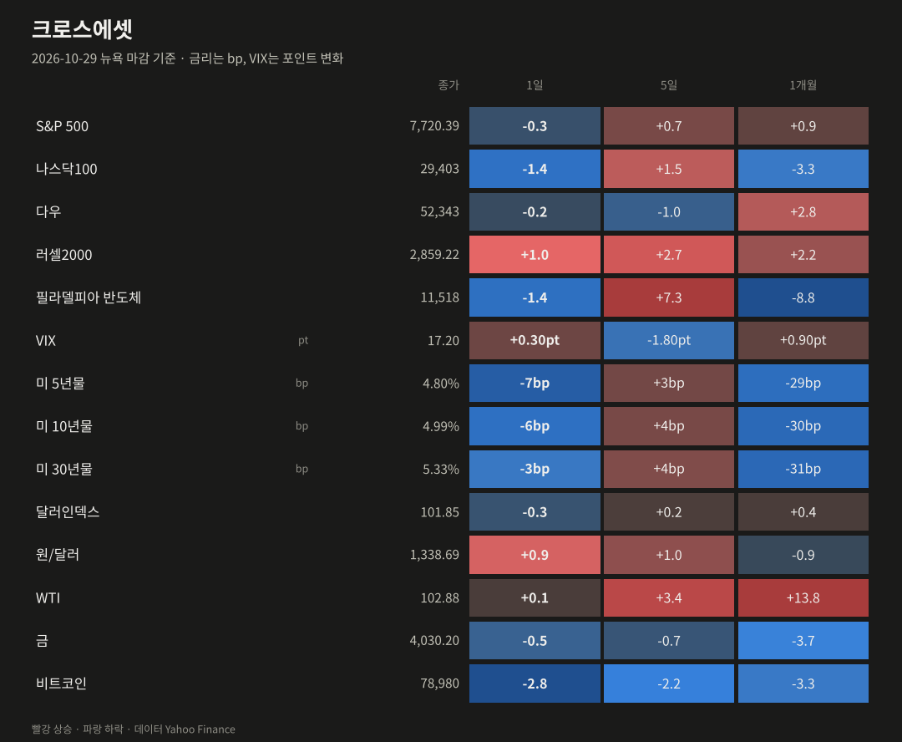
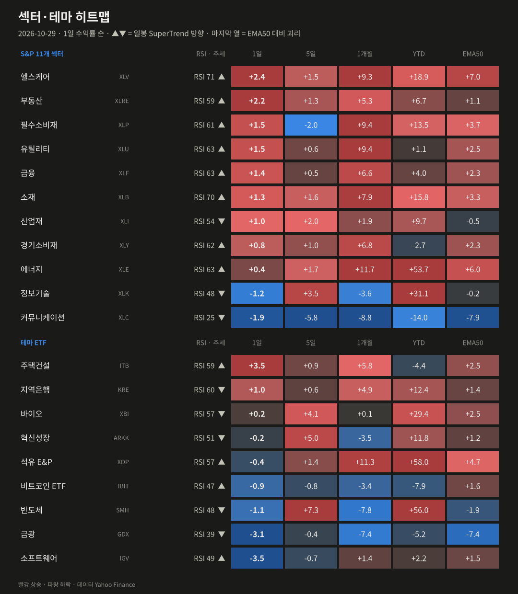
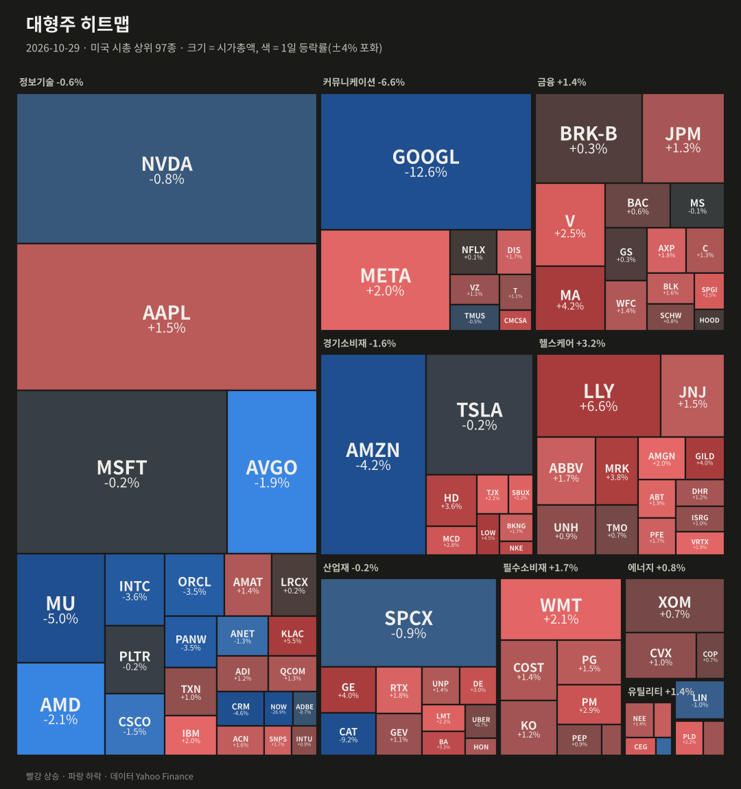
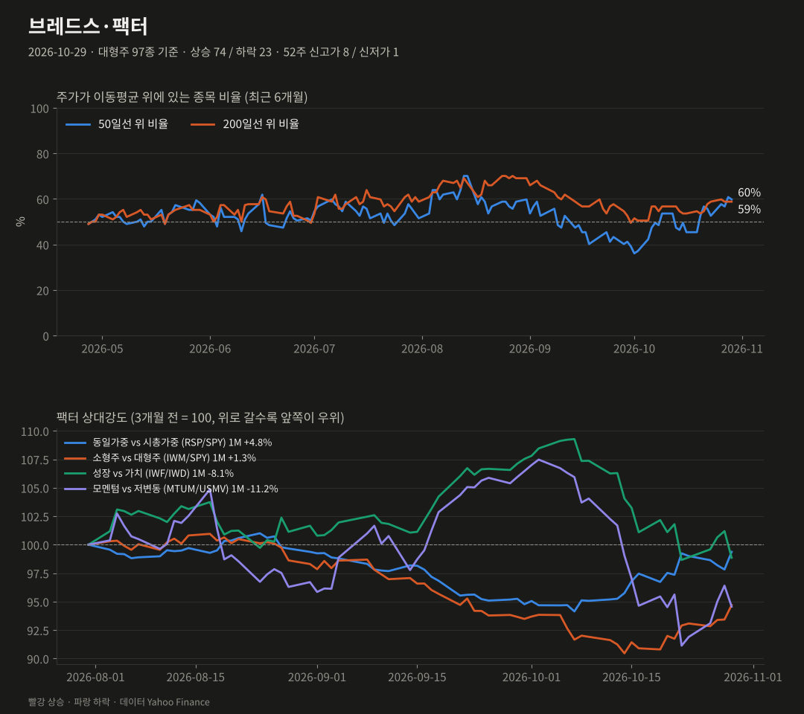
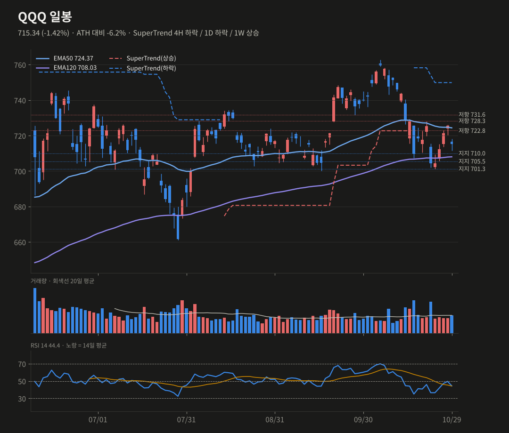
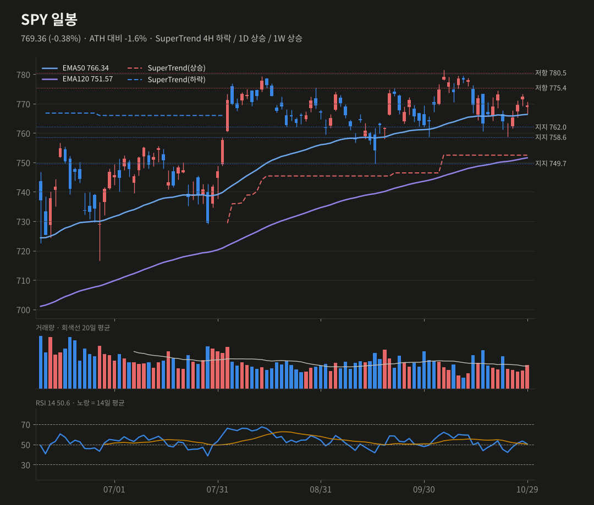
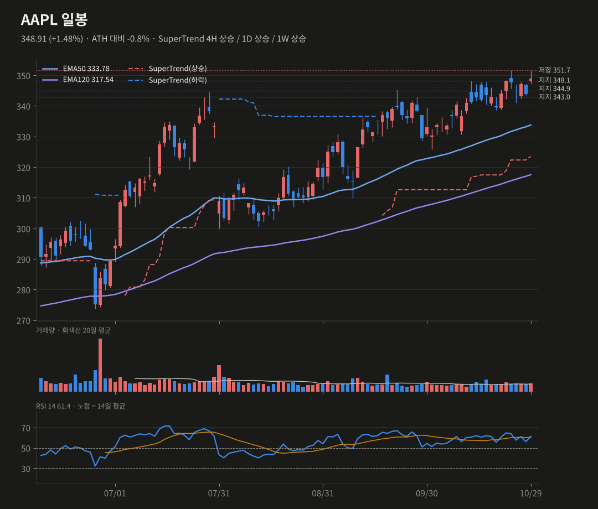

미증시 마감 브리핑
10/29(목) 뉴욕 마감 기준 · 생성 2026-10-30 07:41 KST
알파벳 −12.6%, 서비스나우 −27%로 대형 기술주가 무너졌지만, 돈은 헬스케어·소형주·동일가중으로 옮겨갔어요. 장 마감 후 아마존 −7%로 나스닥 부담이 이어지고 있어요.
S&P 5007,720.39-0.30%
나스닥10029,403-1.38%
다우52,343-0.25%
러셀20002,859.22+1.01%
반도체(SOX)11,518-1.42%
VIX17.20+0.30pt
미 10년물4.99%-5.60bp
원/달러1,338.69+0.90%
요약
- 지수: 나스닥100 −1.4%, S&P −0.3%였어요. 반면 오른 종목은 74/97, RSP +1.2%, 러셀 +1.0%로 넓은 로테이션이었어요.
- 실적: GOOGL −12.6%, NOW −27%였고, 시간외에는 AMZN −7%, INTC −18%예요. 화두는 AI capex와 현금흐름이에요.
- 매크로: GDP 3.4%로 예상 상회, 근원 PCE는 예상 부합, 10년물은 4.99%로 하락했어요.
- 기술적: QQQ는 EMA50 이탈 후 701.3 지지 시험, SPY는 762~766 지지, AAPL은 351.7 신고가와 11/2 실적이 관건이에요.
종합 판단
MSFT·GOOGL·AMZN 세 하이퍼스케일러의 실적이 엇갈렸지만, 시장의 결론은 'AI capex 대비 현금흐름'이에요. 그래서 나스닥 대형주에서 돈이 빠져 헬스케어, 소형주, 동일가중으로 옮겨가는 로테이션이 뚜렷해요. 10년물이 다시 5% 아래로 내려온 것은 이 로테이션에 우호적이에요. QQQ는 701.3 지지를 지키는지가 단기 분기점이고, AAPL은 상대 강세 속에서 실적을 앞두고 신고가 문턱에 있어요.
MSFT·GOOGL·AMZN 세 하이퍼스케일러의 실적이 엇갈렸지만, 시장의 결론은 'AI capex 대비 현금흐름'이에요. 그래서 나스닥 대형주에서 돈이 빠져 헬스케어, 소형주, 동일가중으로 옮겨가는 로테이션이 뚜렷해요. 10년물이 다시 5% 아래로 내려온 것은 이 로테이션에 우호적이에요. QQQ는 701.3 지지를 지키는지가 단기 분기점이고, AAPL은 상대 강세 속에서 실적을 앞두고 신고가 문턱에 있어요.
무엇이 시장을 움직였나
- 알파벳 −12.6%(거래량 5.4배)로 시총 약 5,000억 달러가 증발했어요. 검색 매출 성장이 12%로 둔화됐고, 잉여현금흐름은 두 분기 연속 적자(−91억 달러)였어요. MSFT 호실적에도 'AI capex가 현금흐름을 갉아먹는다'는 우려가 다시 커졌어요.
- 서비스나우 −27%(거래량 6배)는 4분기 가이던스가 예상에 못 미친 탓이에요. CRM −4.6% 등 소프트웨어(IGV −3.5%) 전반이 끌려 내려갔어요. 캐터필러는 실적이 예상을 웃돌았는데도 −9.3%였어요.
- 경제지표: 3분기 GDP는 +3.4%로 예상 3.1%를 넘었어요. 9월 근원 PCE는 전년비 3.1%로 예상과 같았고, 소비 지출은 +0.5%로 예상 0.6%를 밑돌았어요. 10년물이 5.6bp 내려 4.99%가 되면서 5% 아래로 돌아왔어요.
- 방어·실적주 강세: LLY가 매출 +39%와 연간 가이던스 상향으로 +6.6% 올랐고, 헬스케어(+2.4%)는 사상 최고를 기록했어요. 금리 하락에 주택건설(+3.5%)과 부동산(+2.2%)도 강했어요.
- 팩터: 성장이 가치보다 2.31%p, 모멘텀이 저변동보다 1.91%p 약했어요. 1개월 누적으로 모멘텀은 −11%예요. 비트코인은 −2.8%로 7.9만 달러까지 밀렸어요.
장 마감 후·시간외
- 아마존(AMZN) 시간외 약 −7%(243.8 → 227.1)예요. AWS는 +39%로 5년 만에 가장 빨랐고, 매출은 2,019억 달러(+12%)였어요. 하지만 최근 12개월 잉여현금흐름이 −424억 달러로 적자 전환했어요. 연간 capex 약 2,200억 달러도 유지했어요.
- 인텔(INTC) 시간외 약 −18%예요. 4분기 매출 가이던스가 150~160억 달러로 낮았어요.
- 시간외 기준 QQQ 703.4(−1.7%), SPY 763.9(−0.7%), AAPL 350.6(+0.5%)예요. QQQ는 701.3 지지선 바로 위까지 밀렸어요.

| 자산 | 종가 | 1일 | 5일 | 1개월 |
|---|---|---|---|---|
| S&P 500 | 7720.39 | -0.30% | +0.74% | +0.90% |
| 나스닥100 | 29402.51 | -1.38% | +1.53% | -3.31% |
| 다우 | 52342.56 | -0.25% | -0.99% | +2.82% |
| 러셀2000 | 2859.22 | +1.01% | +2.70% | +2.23% |
| 필라델피아 반도체 | 11518.2 | -1.42% | +7.33% | -8.79% |
| VIX | 17.2 | +0.30pt | -1.80pt | +0.90pt |
| 미 5년물 | 4.801 | -7.0bp | +3.3bp | -28.8bp |
| 미 10년물 | 4.989 | -5.6bp | +3.6bp | -30.4bp |
| 미 30년물 | 5.329 | -3.2bp | +4.2bp | -30.9bp |
| 달러인덱스 | 101.85 | -0.33% | +0.24% | +0.40% |
| 원/달러 | 1338.69 | +0.90% | +0.99% | -0.87% |
| WTI | 102.88 | +0.10% | +3.43% | +13.78% |
| 금 | 4030.2 | -0.53% | -0.74% | -3.74% |
| 비트코인 | 78979.82 | -2.82% | -2.24% | -3.30% |

| 섹터·테마 | 1일 | 5일 | 1개월 | YTD | RSI | 일봉 추세 |
|---|---|---|---|---|---|---|
| 주택건설 ITB | +3.49% | +0.94% | +5.84% | -4.4% | 59 | 상승 |
| 헬스케어 XLV | +2.40% | +1.51% | +9.27% | +18.9% | 71 | 상승 |
| 부동산 XLRE | +2.21% | +1.27% | +5.26% | +6.7% | 59 | 상승 |
| 필수소비재 XLP | +1.54% | -2.01% | +9.40% | +13.5% | 61 | 상승 |
| 유틸리티 XLU | +1.53% | +0.63% | +9.38% | +1.1% | 63 | 상승 |
| 금융 XLF | +1.44% | +0.51% | +6.63% | +4.0% | 63 | 상승 |
| 소재 XLB | +1.29% | +1.63% | +7.86% | +15.8% | 70 | 상승 |
| 지역은행 KRE | +1.04% | +0.62% | +4.93% | +12.4% | 60 | 하락 |
| 산업재 XLI | +0.97% | +2.04% | +1.89% | +9.7% | 54 | 하락 |
| 경기소비재 XLY | +0.75% | +1.03% | +6.76% | -2.7% | 62 | 상승 |
| 에너지 XLE | +0.38% | +1.69% | +11.72% | +53.7% | 63 | 상승 |
| 바이오 XBI | +0.18% | +4.06% | +0.07% | +29.4% | 57 | 하락 |
| 혁신성장 ARKK | -0.17% | +5.02% | -3.51% | +11.8% | 51 | 하락 |
| 석유 E&P XOP | -0.42% | +1.35% | +11.26% | +58.0% | 57 | 상승 |
| 비트코인 ETF IBIT | -0.93% | -0.76% | -3.44% | -7.9% | 47 | 상승 |
| 반도체 SMH | -1.06% | +7.32% | -7.77% | +56.0% | 48 | 하락 |
| 정보기술 XLK | -1.18% | +3.51% | -3.58% | +31.1% | 48 | 하락 |
| 커뮤니케이션 XLC | -1.87% | -5.78% | -8.80% | -14.0% | 25 | 하락 |
| 금광 GDX | -3.12% | -0.44% | -7.37% | -5.2% | 39 | 하락 |
| 소프트웨어 IGV | -3.52% | -0.69% | +1.40% | +2.2% | 49 | 상승 |

| 상승 상위 | 1일 | 거래량(20일 대비) | 하락 상위 | 1일 | 거래량 |
|---|---|---|---|---|---|
| LLY | +6.63% | x1.92 | NOW | -26.95% | x6.02 |
| KLAC | +5.45% | x1.41 | GOOGL | -12.64% | x5.41 |
| LOW | +4.48% | x1.21 | CAT | -9.25% | x2.98 |
| MA | +4.16% | x1.47 | MU | -4.98% | x0.8 |
| GILD | +4.03% | x1.45 | CRM | -4.63% | x1.06 |
| GE | +3.96% | x1.14 | AMZN | -4.25% | x2.25 |

대형주 97종: 상승 74 / 하락 23 · 50일선 위 59.8% (전일 60.8%, 5일 전 55.7%) · 200일선 위 58.8% · 52주 신고가 8 / 신저가 1
지수는 내렸지만 오른 종목이 74, 내린 종목이 23으로 폭은 오히려 넓었어요. 동일가중(RSP +1.20%)이 시총가중(SPY −0.38%)을 1.59%p 앞섰고, 러셀2000도 +1.0%였어요. 하이퍼스케일러를 빠져나온 돈이 나머지 종목으로 퍼진 로테이션이에요.
| 팩터 스프레드 | 1일 | 5일 | 1개월 |
|---|---|---|---|
| 동일가중 vs 시총가중 (RSP/SPY) | +1.59% | +0.13% | +4.85% |
| 소형주 vs 대형주 (IWM/SPY) | +1.35% | +1.93% | +1.31% |
| 성장 vs 가치 (IWF/IWD) | -2.31% | +0.19% | -8.07% |
| 모멘텀 vs 저변동 (MTUM/USMV) | -1.91% | +3.77% | -11.17% |
기술적 분석 · 확률
TradingView 설정과 맞춘 지표(EMA50·EMA120, SuperTrend ATR20×4, RSI14, MACD 12/26/9). 확률은 차트 기반 추정치예요.
QQQ 715.34 -1.42%
SuperTrend 4H 하락 / 1D 하락 / 1W 상승 · RSI 44.4
단기 반등 45% (-5) · 스윙 상승 40% (-5)
종가로 1D EMA50(724.4)과 4H EMA120(722.8)을 모두 잃었고, 4H RSI도 50 아래로 내려갔어요. 시간외 703.4로 701.3 지지 시험이 임박했어요. 주봉 히스토그램도 다시 확대(−4.21 → −4.71)됐어요.
상방 722.8 종가 회복 → 728.3, 735
하방 701.3 이탈 → 695.3, 1D EMA120(708.0) 아래 하락 추세 확인
SuperTrend 4H 하락 / 1D 하락 / 1W 상승 · RSI 44.4
단기 반등 45% (-5) · 스윙 상승 40% (-5)
종가로 1D EMA50(724.4)과 4H EMA120(722.8)을 모두 잃었고, 4H RSI도 50 아래로 내려갔어요. 시간외 703.4로 701.3 지지 시험이 임박했어요. 주봉 히스토그램도 다시 확대(−4.21 → −4.71)됐어요.
상방 722.8 종가 회복 → 728.3, 735
하방 701.3 이탈 → 695.3, 1D EMA120(708.0) 아래 하락 추세 확인
SPY 769.36 -0.38%
SuperTrend 4H 하락 / 1D 상승 / 1W 상승 · RSI 50.57
단기 상승 50% · 스윙 상승 50%
1D MACD선이 0선 위로 올라섰고 SuperTrend 상승(752.5)도 유지돼요. 동일가중 강세로 지수 하단은 받쳐지고 있어요. 다만 시간외 763.9로 EMA50(766.3)을 밑돌아 762.0 지지 확인이 필요해요.
상방 775.4 돌파 → 780.5~781.6(ATH)
하방 762.0 이탈 → 758.6, 749.7
SuperTrend 4H 하락 / 1D 상승 / 1W 상승 · RSI 50.57
단기 상승 50% · 스윙 상승 50%
1D MACD선이 0선 위로 올라섰고 SuperTrend 상승(752.5)도 유지돼요. 동일가중 강세로 지수 하단은 받쳐지고 있어요. 다만 시간외 763.9로 EMA50(766.3)을 밑돌아 762.0 지지 확인이 필요해요.
상방 775.4 돌파 → 780.5~781.6(ATH)
하방 762.0 이탈 → 758.6, 749.7
AAPL 348.91 +1.48%
SuperTrend 4H 상승 / 1D 상승 / 1W 상승 · RSI 61.39
단기 상승 55% (+10) · 스윙 상승 55% (+5)
344.9를 회복했고 4H MACD 골든크로스, 1D 히스토그램 반등이 나왔어요. 하이퍼스케일러에서 빠진 돈이 capex 부담이 적은 애플로 들어오는 모습이에요. ATH(351.7)까지 0.8%이고 11/2 실적을 앞두고 있어요.
상방 351.7 종가 돌파 → 신고가 추세 재개
하방 344.9 재이탈 → 340.6(4H EMA50), 338.7
SuperTrend 4H 상승 / 1D 상승 / 1W 상승 · RSI 61.39
단기 상승 55% (+10) · 스윙 상승 55% (+5)
344.9를 회복했고 4H MACD 골든크로스, 1D 히스토그램 반등이 나왔어요. 하이퍼스케일러에서 빠진 돈이 capex 부담이 적은 애플로 들어오는 모습이에요. ATH(351.7)까지 0.8%이고 11/2 실적을 앞두고 있어요.
상방 351.7 종가 돌파 → 신고가 추세 재개
하방 344.9 재이탈 → 340.6(4H EMA50), 338.7



일정
- 10/30 3분기 고용비용지수(ECI), 엑손모빌·애브비 실적
- 11/1 미국 서머타임 종료(마감 06:00 KST)
- 11/2 장후 애플 실적
- 11/3 미국 중간선거
- 12월 FOMC 인상 여부
출처
- Stock Market Today October 29, 2026: Nasdaq Falls as Alphabet Drops; Amazon and Intel Slide After Hours (StockTitan)
- Stock Market Today (Oct. 29, 2026): S&P 500 falls after Alphabet and Microsoft issue divergent earnings (TheStreet)
- AWS Jumps 39% as Amazon's Cash Flow Sinks: Rapid Earnings Reaction (Motley Fool)
데이터 Yahoo Finance·Nasdaq. 색은 한국식(빨강 상승·파랑 하락). 투자 판단의 참고 자료예요. 지난 브리핑